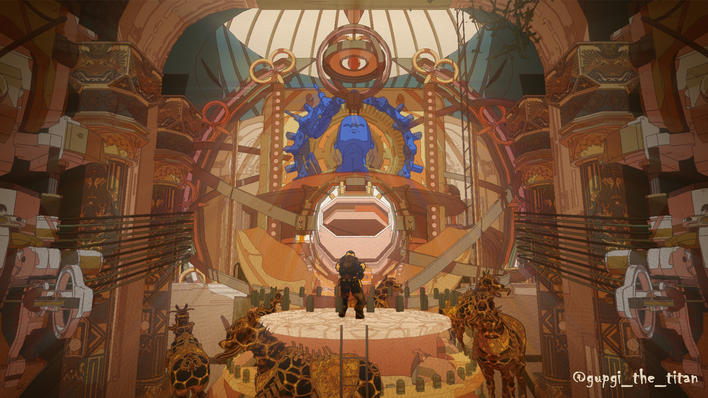

- 2021
- 2022
- 2023
2023 여름방학 계획
여름방학에 인체 구도 자유자재로 만들고 변형할 수 있을 정도로 노력한다.코딩을 배우며 생활코딩에 있는 다양한 언어들을 배운다.
C4d 수업을 완강한다.
2학기에 3전공 3핵교를 듣고 3d 애니메이션 수업은 청강을 하며 notch나 touch designer 수업을 한다.
언리얼 엔진을 겨울에 공부함ㄴ다.
나의 화장실 이야기를 구체화하고 vfx에 쓸 수 있도록 노력한다.
툰렌더 공부를 한다.

2023 겨울 방학 계획
원하는 공부를 더 하거나 프로젝트를 시작한다.